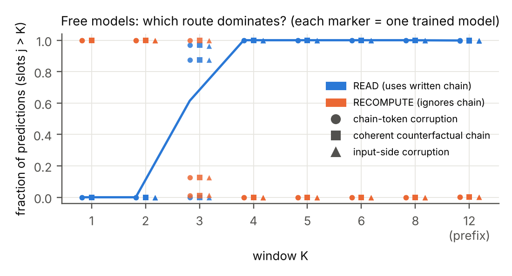
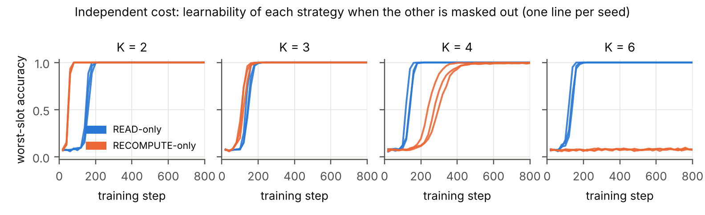
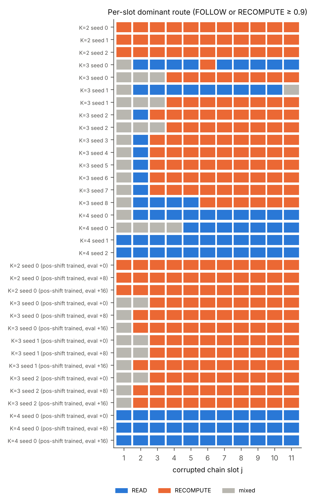

Training a transformer with teacher forcing on correct chain-of-thought (CoT) intermediates leaves a choice open. The model can READ its previous written intermediate, or RECOMPUTE the next one from the input. Both achieve zero loss. We built a task family where one knob, the window size K of a running window sum, moves the relative cost of the two routes. We then measured causal reliance on the written chain with three oracle-validated interventions in 54 small transformers trained from scratch.
Why it matters. Corruption-based tests of CoT faithfulness, applied to tasks below the serial "ceiling", measure which route training happened to select. Identically trained models can differ in faithfulness by seed. The underlying principle, that training picks the more available of redundant solutions, is known from shortcut learning and the "copycat" problem in imitation learning. The new contribution is to show, with an independent cost measure, that it governs whether written CoT intermediates are causally used.
| # | Claim (scope: 2-layer, d=128 transformers; window sums mod 11; length 12) | Evidence | Strength |
|---|---|---|---|
| C1 | Correct chain supervision can yield models whose next-step prediction does not depend on the written intermediate (K ≤ 2) | 6/6 models; FOLLOW 0.000 under 3 intervention types | strong |
| C2 | For K ≥ 4 (incl. prefix CoT) models read the chain; corrupted values propagate to the final answer in 100 % of cases | 15/15 models | strong |
| C3 | The adopted route is the one learned faster early in isolation (attention-masked forced-route models) | 6/6 comparisons by early AUC; 5/6 by steps-to-0.99 | moderate |
| C4 | Near parity the choice is seed-dependent with absolute positions; positional randomisation removes READ seeds and per-slot mosaics | 9 + 3 seeds, census | moderate, post hoc |
| C5 | "Self-correction" of corrupted intermediates is a by-product of route selection | free-running continuation, all models | strong (descriptive) |
| L1 | Lonely Runner: no counterexample to the amended Fan–Sun conjecture for n=7 ≤ 100, n=8 ≤ 70, n=9 ≤ 55; new k=2 septuple (2,7,9,11,13,20,54), ML = 9/65 | exact exhaustive search, cross-checked | strong, low significance |

The sequence interleaves inputs and chain values, x1 c1 x2 c2 … x12 c12, with cj = Σ of the last K inputs mod 11.
At the position of xj+1 the model predicts cj+1. READ = cj + xj+1 − xj+1−K, retrieving 2 operands.
RECOMPUTE = xj+2−K + … + xj+1, retrieving K−1 operands. K = 2 favours recomputation, K = 3 is parity by operand count, and K ≥ 4 favours reading.
Operand count is only a heuristic. The cost claim rests on measured learnability (§4, Fig. 2).
We used web search, OpenAlex and arXiv full texts (log: docs/search_log.md), and an independent adversarial AI reviewer who searched
again and found five works we had missed. These are now in the novelty matrix (docs/03_novelty_matrix.md, 24 rows).
| Closest work | What it shows | What we add |
|---|---|---|
| He et al. 2026, Ceiling of a Task (2609.33134) | Above the serial ceiling the chain is necessary; Z60 chain models depend on their chain | The below-ceiling regime, where a model may ignore a correct chain; our K ≥ 4 results replicate theirs |
| Wang, Alazali & Zhong 2026 (2602.01017) | Noise in chains drives skip-step reasoning (simplicity bias) | A zero-noise regime where skipping is cheaper; a cost dial; independent cost |
| Liu et al. 2023, Shortcuts to Automata | Asserts that models "can ignore the scratchpad" (no causal test) | A causal test, and when it happens |
| Hermann et al. 2020/2023; Shah et al. 2020 | Availability/simplicity bias among redundant features | The same principle applied to written CoT intermediates |
| de Haan et al. 2019; Wen et al. 2020 (copycat) | Policies copy their own previous action instead of computing | The transformer/CoT analogue, in both directions |
| Zhong et al. 2023, Clock & Pizza | Seeds and hyperparameters select different algorithms | The same phenomenon for chain reliance, at cost parity |
Honest assessment: the principle is not new; the specific demonstration is incremental but, to our knowledge, unreported. No prior work we found shows that correct, noise-free chain supervision can produce a model that ignores its chain.

| K | Steps to 0.99, READ-only | RECOMPUTE-only | Faster early | Free models READ-dominant |
|---|---|---|---|---|
| 2 | 200, 180, 200 | 80, 80, 80 | RECOMPUTE | 0/3 |
| 3 | 200, 180, 200 | 160, 180, 200 | RECOMPUTE (marginal) | 2/9 |
| 4 | 180, 160, 180 | 400, 500, 560 | READ | 3/3 |
| 6 | 180, 160, 200 | never (≤ 800) | READ | 3/3 |
| 3 (pos-shift) | 400, 440 | plateau 0.95 | RECOMPUTE (to 0.5) | 0/3 |
| 4 (pos-shift) | 340, 400 | plateau 0.84 | READ | 1/1 |
test_oracle.py).
| Level | Result |
|---|---|
| 1 Internal consistency | Three interventions agree within 0.006; unit tests pass |
| 2 Known results | Prefix-CoT reliance reproduced; all published Lonely Runner counts reproduced |
| 3 Positive/negative controls | Oracles 1.000; untrained ≈ 0.05 |
| 4 Competing explanations | Older-chain reading excluded; position artefact confirmed for mosaics only; spillover inconclusive |
| 5 Robustness | 3–9 seeds per cell; position shifts; loss masking; dynamics stable 1000–3000 steps |
| 6 Independent method | Forced-route learnability, a cost measure independent of the outcome |
| 7 Independent replication | Partial: a separate AI reviewer re-implemented the interventions and reproduced the numbers. Not an independent human or experimental replication. |
PyTorch, CPU only. Decoder-only pre-LN transformer, d=128, 4 heads, 2 layers, learned absolute positions. AdamW (lr 1e-3, wd 0.01), batch 256,
3000 steps, fresh data every step. Interventions use n = 2000 sequences per slot. Forced-route models use attention whitelists. Code, per-model results,
logs and figures: cot_reliance/; reproduction commands in README.md (≈ 15 CPU-minutes per model).
Lonely-runner kernel: lonely_runner/neartight.c, exact and cross-checked.
Landscape and selection: the 13 supplied programmes were audited (docs/01). Programmes needing laboratory, field or GPU
resources were documented but not advanced. The full adversarial review and our point-by-point responses are in docs/04*; failed directions are in docs/07.
He, Fan, Xiao, Marculescu & Ribeiro 2026, arXiv 2609.33134 · Wang, Alazali & Zhong 2026, arXiv 2602.01017 · Liu et al. 2023, ICLR, arXiv 2210.10749 · Hermann & Lampinen 2020, arXiv 2006.12433 · Hermann, Mobahi, Fel & Mozer 2024, arXiv 2310.16228 · Shah et al. 2020, arXiv 2006.07710 · de Haan, Jayaraman & Levine 2019, arXiv 1905.11979 · Wen et al. 2020, arXiv 2010.14876 · Zhong, Liu, Tegmark & Andreas 2023, arXiv 2306.17844 · Shih, Winnicki & Darve 2026, arXiv 2606.29522 · Zhu, Wang & Sui 2025, arXiv 2505.04955 · Lanham et al. 2023, arXiv 2307.13702 · Garcia 2026, arXiv 2605.10799 · Valmeekam et al. 2026, TMLR, arXiv 2505.13775 · Cordella 2026, arXiv 2609.03444 · Fan & Sun, arXiv 2306.10417 · Yi, Gill & Bu 2026, arXiv 2610.40694.